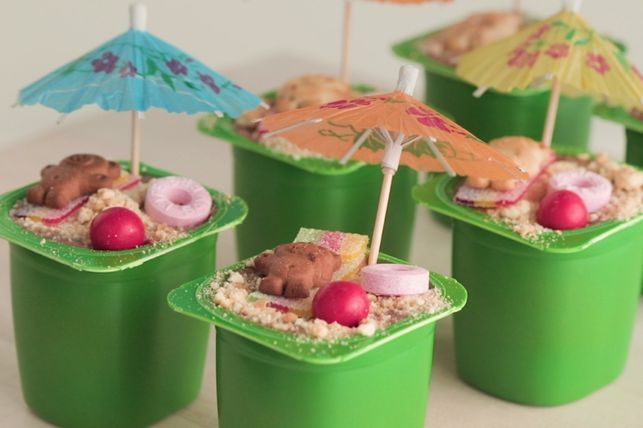

Bears at the Beach

Looking fur a Fun Summer Dessert? Look No Fur-ther!
This easy recipe is for those who would like to turn their yogurt cups bear-y fun! This recipe will produce 6 fun yogurt cups :)
Ingredients
- 12 biscuits -> sand
- 6 yogurt cups (substitutes: pudding, jello)
- 4 Sour Strips -> beach towel
- 6 Maltesers (substitues: Whoppers) -> beach ball
- 6 Life Savers -> swim tube
- 6 Tiny Teddies
- 6 parasole toothpicks *not for consumption*
Recipe Steps
- Place the biscuits in a sealable bag (ziplock) and crush them until they become fine crumbs.
- Take the lids off of the yogurt cups and sprinkle the crumbs over the cups.
- Cut the Sour Strips to resemble beach towels and place them over the crumbs.
- Place the Tiny Teddies on top of their beach towel.
- Add a life Saver and Maltesers to each cup.
- Finally, place an open parasole toothpick to complete the look.
Voila! You have succesfully created your adorable bear on the beach yogurt cub-s!